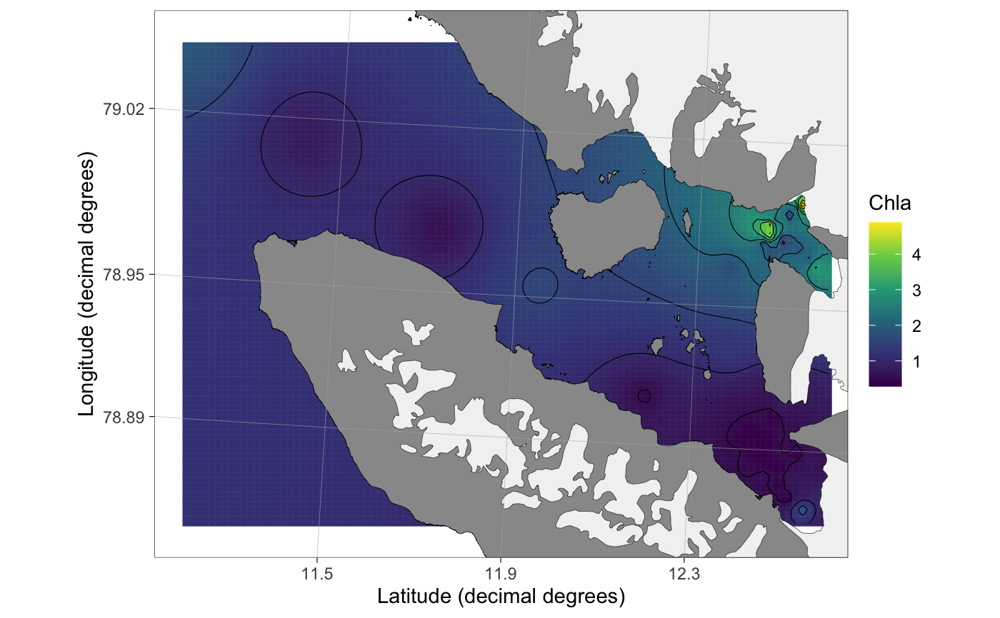
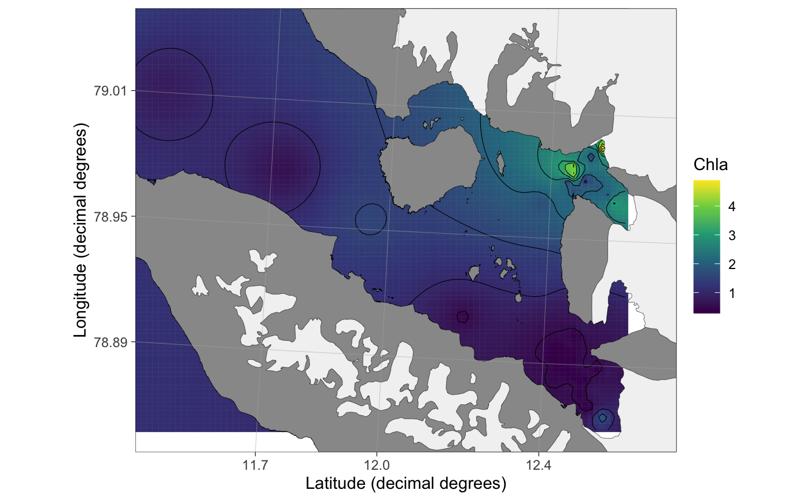

Plot method for spatInt objects.
# S3 method for spatInt plot(x, basemap = TRUE, type = "svalbard", limits = "auto", limits.lon = 0.001, limits.lat = 0.001, col.scale.limits = NULL, legend.label = NA, round.lat = FALSE, n.lat.grid = 3, round.lon = FALSE, n.lon.grid = 3, keep.glaciers = TRUE, land.col = "#eeeac4", land.size = 0.1, land.border.col = "black", gla.col = "grey95", gla.size = 0.1, gla.border.col = "black", grid.col = "grey70", grid.size = 0.1, base_size = 11, ...)
Arguments
| x |
|
|---|---|
| basemap | Logical. Should basemap from |
| type | Type of basemap. See |
| limits | Map limits. See |
| limits.lon, limits.lat, round.lon, round.lat, n.lon.grid, n.lat.grid, land.size, land.col, gla.col, grid.col, land.border.col, gla.size, gla.border.col, grid.size, base_size, keep.glaciers | See |
| col.scale.limits | A numeric vector of lenght 2 defining the limits for color scale of interpolated results. If |
| legend.label | Label for color legend. If NA (default), the labels are extracted from the |
| ... | Additional arguments. Required by R build checks. Ignore. |
See also
Examples
data(chlorophyll) ## load an example dataset x <- interpolate(chlorophyll, Subset = "From <= 10", value = "Chla") ## Interpolate#> [inverse distance weighted interpolation]plot(x, type = "kongsfjorden") ## Plot## PlotSvalbard functions can be expanded by using ggplot2 syntax plot(x, type = "kongsfjorden") + geom_text(data = chlorophyll, aes(x = lon.utm, y = lat.utm, label = Station))## Changing limits is easiest using the inbuild argument plot(x, type = "kongsfjorden", limits = c(11.4,12.7,78.85,79.05))